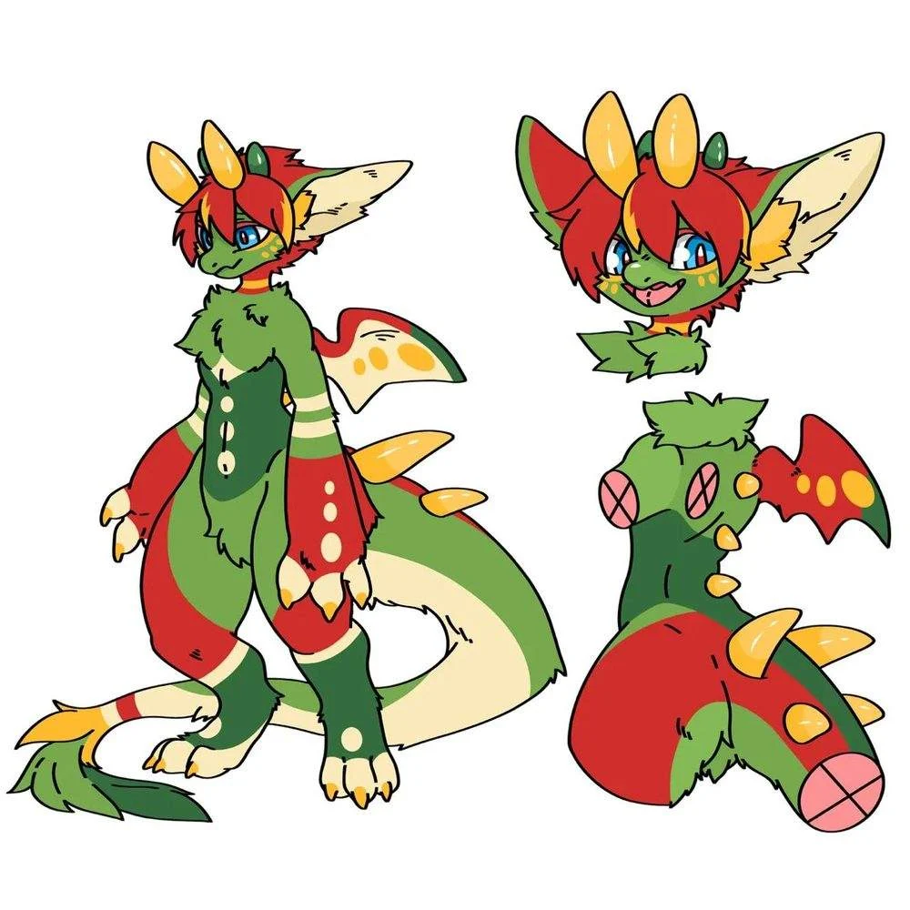

Bliski przyjaciel
Chip
Ich rytm jest celowo własny — łagodny, ciekawy siebie nawzajem, niespieszny. Powracający moment: Toro sięga ogonem i puszystą kitą zamyka Chipowi pyszczek. Przyjaciele Chipa — Otto, Reem, Sorrel i Odon — wszyscy już go znają.

Cancrosa Files · Ref // Furred Dragon · 004
„Toro” · antropomorficzny futrzasty smok · on/jego
The family wanted a tiger. He is a lantern.Rodzina chciała tygrysa. On jest latarnią.
Miał wszystko, stracił wszystko i z niczego zbudował sobie ciepłe życie — przez cały czas niezmiennie pogodny.
Imię · 橋本 Hashimoto
虎
Tora — tygrys
Drapieżny i nigdy nienasycony. Tora jest o jedną długą samogłoskę od tōrō — i to tygrysa usłyszała w imieniu jego rodzina: coś, co poluje na kolejny wynik i traktuje „wystarczy” jak porażkę.
灯籠
Tōrō — kamienna latarnia
Spokój, światło, tradycja. Na nic nie poluje i niczego więcej nie potrzebuje — po prostu stoi i świeci, wystarczająca taka, jaka jest. Dla niego to jedyne prawdziwe życie; tygrys, mimo całego głodu, tylko istnieje.
Hashimoto znaczy „u stóp mostu” — i to dwie prawdy naraz. Rodzina zachowuje się jak przyczółek mostu: sztywna, nośna, trzymająca pozory. A on mieszka dziś w filarze prawdziwego mostu. Wyrzucony z jednego zimnego przyczółka, odbudował się w drugim i wypełnił go ciepłym światłem. Imię, które go wygnało, jest imieniem, które odkupił.
Część pierwsza
Smok w futrze zamiast łusek: ciepły i przystępny, smocze cechy wyglądają przyjaźnie, nigdy groźnie. Duże, ruchliwe, kremowożółte uszy obracają się razem z jego nastrojem.
Część druga
Panta rei
Niezmiennie pogodny, cokolwiek się dzieje. Wszystko płynie; co ma być, to będzie; psy szczekają, karawana jedzie dalej. Idzie przez życie, niczego nie ściskając. Wplata cytaty z filozofów w zwykłe rozmowy — pozostałość po drogiej edukacji, noszona lekko, raczej żeby rozbroić chwilę niż zaimponować.
Szkoła ulicy
Budzi się wcześnie („trudno spać, kiedy nie wiesz, czy noc zostanie ciepła”), sprząta po sobie w cudzym miejscu, a gorący prysznic, kanapa czy śniadanie to dla niego prawdziwy luksus. Je wszystko. Zaradny jak Chip — i nigdy nie zszedł na złą drogę.
Wydziedziczenie
Pochodzi z zamożnej rodziny, która postawiła na niego wszystko: książki, łacina, filozofia, „jak pięknie mówić”. Potem odcięła go całkowicie — z powodu temperamentu. Oni żądali tylko najwyższych wyników; on był zadowolony z każdego, bo z każdego coś wynosił. Potem dwa, trzy lata na ulicy.
Żyć, a nie istnieć
Drogę narzuconą przez rodzinę widzi jako zwykłe istnienie — sztywne, wiecznie głodne kolejnego wyniku. Wybrał życie: latarnię, która naprawdę świeci. Woli żyć naprawdę pod mostem, niż istnieć w rodzinnej wieży.
I had a beautiful house a few years ago, and all its wisdom with it — but what good is it once the house grows colder than a hole under a bridge?Kilka lat temu miałem piękny dom, a w nim całą jego mądrość — ale na co ona, skoro dom zrobił się zimniejszy niż dziura pod mostem?
Ironmill Wharf, nr 1
Sterownia
Dawna sterownia mostu zwodzonego, w filarze: cegła, żeliwne belki i martwa maszyneria — pulpit z dźwigniami, koło zamachowe, zębatki — wszystko nietknięte, bo dba o mienie, które nie jest jego. Wysokie okno z kratą wychodzi na wodę. Wchodzi się przez ukryte drzwi na kod.
Urządzone z ulicy, zrobione legalnie
Fotel pod narzutą, lampa z frędzlami, lampki na belce, dwa nachodzące na siebie dywany, półki ze skrzynek. Vince (dodatkowe kursy) i Ragnar (przyjacielskie długi) złożyli się, żeby mógł kupić coś własnego, a prawnik Calloway zrobił ze sterowni legalny adres. Toro jest dziś jej prawowitym właścicielem.
Część trzecia
Bliski przyjaciel
Ich rytm jest celowo własny — łagodny, ciekawy siebie nawzajem, niespieszny. Powracający moment: Toro sięga ogonem i puszystą kitą zamyka Chipowi pyszczek. Przyjaciele Chipa — Otto, Reem, Sorrel i Odon — wszyscy już go znają.
Znaleźli go · przyjęli go
Poznali Toro na końcu małej zagadki: Vince tropił znikanie Chipa, Ragnar wyważył drzwi pewien, że to melina — i znaleźli dwójkę obsypaną cukrem pudrem z pączków. Prysznic, śniadanie, przeprosiny od Vince'a i otwarte drzwi: „tu jest dom; znajdzie się miejsce na twoje aforyzmy”.